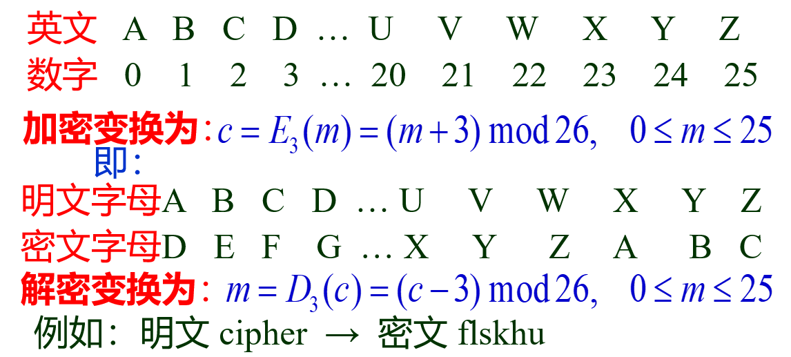
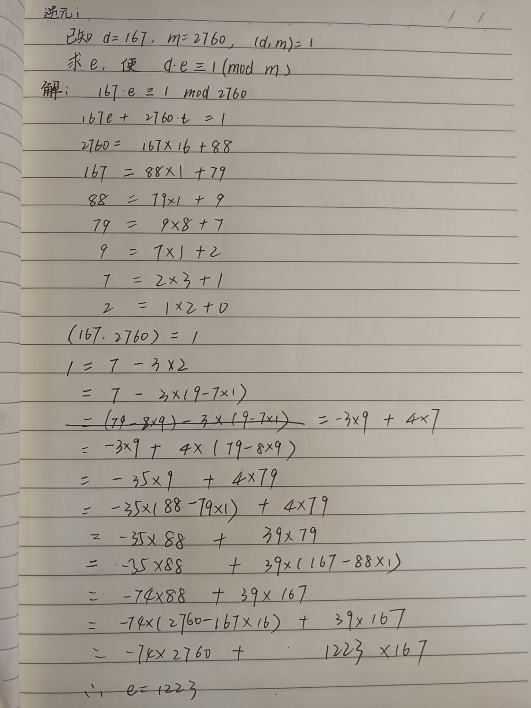
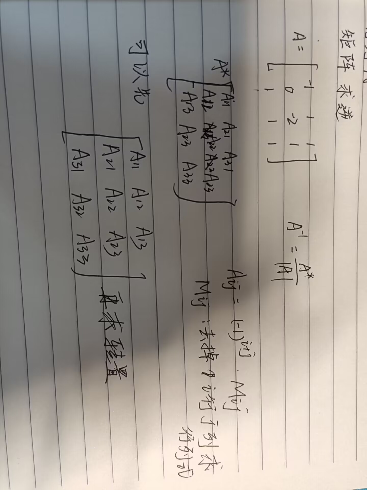
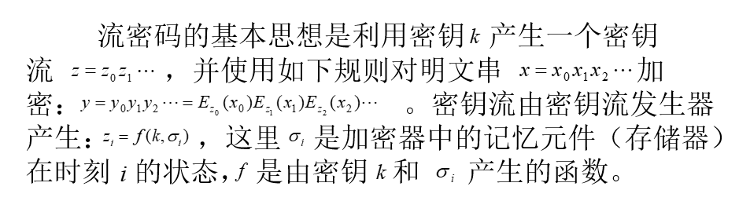
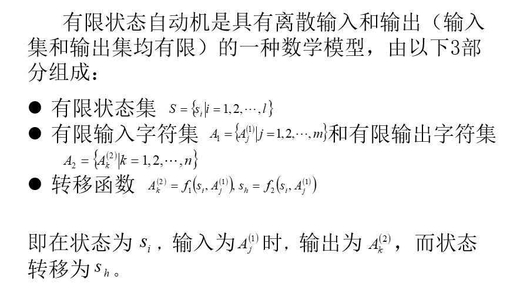
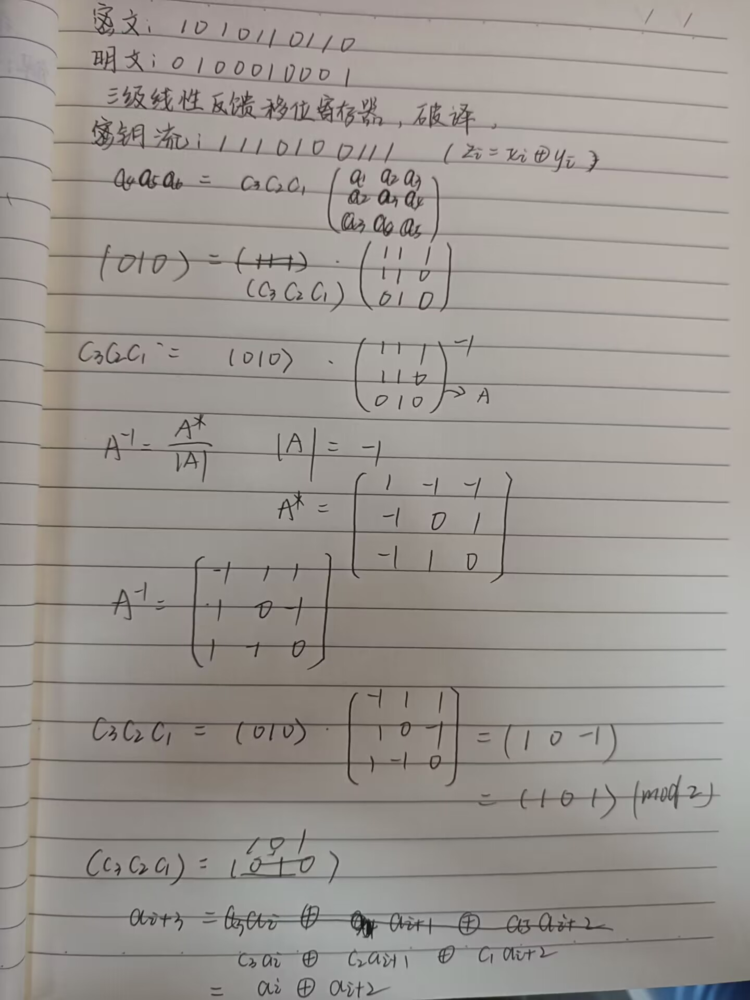

现代密码学
第一章
被动攻击：抗击被动攻击重点在于预防而非检测
获取消息内容：
进行业务流分析：敌手无法获得消息的真实内容，但是获得了消息的格式，通信双方的位置和身份等。比如获取我们和谁电子邮箱通信，和谁交易
主动攻击分为以下三类
中断：破坏计算机硬件。网络或文件管理系统
篡改：修改数据文件的数据、替换某一程序使其执行不同的功能、修改网络中传递的消息内容
伪造：在网络中插入伪造的消息或在文件中插入伪造的记录
恶意程序：
需主程序（是某个程序中的一段，不能独立于实际的应用程序或系统程序）：陷门、逻辑炸弹，特洛伊木马、病毒
不需主程序：细菌、蠕虫
单向陷门函数（Trapdoor One-way Function）：
正向计算很容易，但是反向计算就会困难，满足这两条的为单向函数
在知道密钥sk的情况下，计算是容易的，陷门性，密钥sk为陷门信息
逻辑炸弹 ：
逻辑炸弹是在满足特定逻辑条件时能改变运行方式，对目标计算机系统实施破坏的计算机程序。这种程序通常隐藏在具有正常功能的程序中，在不具备触发条件的情况下，逻辑炸弹深藏不露，系统运行情况良好，用户也察觉不到任何异常。但是，一旦触发条件得到满足，逻辑炸弹就会“爆炸”，造成对目标系统的硬件破坏、文件破坏、数据破坏、信息渗漏及系统瘫痪等严重后果。逻辑炸弹的触发方式非常多，如事件触发、时间触发、计数器触发等。
逻辑炸弹程序不但可以设置在计算机的软件中，也可以暗藏在计算机的固件中。逻辑炸弹不具传染性，不能自我复制，但触发逻辑炸弹发作的诱因可以存在于逻辑炸弹载体的各个环节，具有不可控制的意外性。
特洛伊木马：
可伪装成合法程序下载到计算机上。这种传播方式通常是攻击者利用社交工程将恶意代码隐藏在合法软件中，试图用其软件获得用户的系统访问权限。它的特点是能与外界通信
病毒
破坏计算机功能或数据，以破坏为主，传染其他程序的方式是通过修改其他程序来把自身或其变种复制进去完成的，典型的熊猫烧香
蠕虫：
通过网络的通信功能将自身从一个结点发送到另一个结点并启动运行的程序，典型的应用于耗尽对方的计算机资源
安全的网络通信必须考虑下面4个方面：
1.加密算法
2.用于加密算法的秘密信息、
3.秘密信息的分布和共享
4.使用加密算法和秘密信息以获得安全服务所需的协议
所使用的密码算法包括5个方面：
(1) 加密算法Ek(m)
(2) 解密算法Dk(c)
(3) 明文空间 M
(4) 密文空间 C
(5) 密钥空间 K
凯撒密码：

移位变换
c = Ek(m) = m+k(mod 26)
m = Dk(c) = c-k(mod 26)
仿射变换
有一个求逆元的

多表代换密码
求逆

第二章
流密码：

有限状态自动机

密钥流产生器：
函数 φ 状态转移，当前状态变成另一状态
函数 ψ 输出函数，某状态的输出值
采用线性的φ 和非线性的 ψ
线性反馈移位寄存器
优先级：
异或 > 与 > 或
m序列密码的破译
